Read chapters 1–3 to understand and run the app. Chapter 4 is the feature reference: every screen, with the exact clicks. Chapters 5–6 explain the engineering, so you can defend every number. Chapters 7–8 are for the presentation itself.
this style are buttons, files or values you will see on screen.A digital twin of a 2.0 L four-cylinder petrol engine that runs entirely in the browser. It shows how a monitoring system can tell that an engine is failing, which part is failing, and how long is left, using only sensor readings.
Most maintenance is done on a fixed schedule: it either wastes parts or misses failures. Condition monitoring watches the engine instead. IgniSense simulates two engines side by side. The Plant is the "real" engine, and it can develop hidden faults such as a wearing oil pump. The Twin is a healthy copy of the same physics that only sees the sensor readings and predicts what every sensor should read. The Analytics compare the two. The gap between what the sensors read and what the healthy Twin expects is the evidence, and everything else (fault name, severity, health score, remaining life) is built from that gap.
| Capability | In plain words |
|---|---|
| Live digital twin | A 3D engine, moved by the same equations as the numbers, beside gauges that each show what a healthy engine would read. |
| Fault diagnosis | Names oil-pump wear, cooling degradation, bearing wear, alternator faults and a misfire in a specific cylinder, with the evidence listed. |
| Early warning | A statistical detector (CUSUM) notices a small persistent drift before any fixed limit trips. |
| Sensor-fault detection | Proves from physics that a reading is impossible (for example the coolant "jumping" 25 °C in a tenth of a second) and blames the sensor, not the engine. |
| Remaining useful life | A straight-line trend with an uncertainty band, shown only when the trend is statistically real. |
| Calculations | Click any gauge value to see the equation behind it with today's numbers substituted in. |
| Blind test, real data | A hidden fault case is selected and the monitor must name it. Record and replay CSV, ESP32, OBD-II and phone sensors all use the same analytics. |
There is no server, no account and no internet needed once it is installed. Everything runs in the browser on your own machine.
node --version.start-ignisense.bat. On macOS or Linux, open a terminal in the folder and run sh start-ignisense.sh.http://localhost:4173 in your browser.Ctrl+C).| Command | What it does |
|---|---|
npm install | Once, needs internet. Downloads everything the app needs. |
npm run demo | Builds the app and opens it at localhost:4173. Use this on the presentation laptop. It works offline. |
npm run dev | Development mode at localhost:5173 with live reload. Use it when you are changing code. |
npm test | Runs all 363 tests (physics, analytics, scenarios). |
npm run lint | Style and architecture checks, including the rule that keeps the analytics blind. |
| Problem | Fix |
|---|---|
'tsc' is not recognized | A previous install did not finish. Delete the node_modules folder and run start-ignisense.bat again. Keep the window open until the install ends. (The launcher now repairs this by itself.) |
| "Node.js is not installed" | Install Node from nodejs.org, then close every window and open a new one. A window opened before the install does not see Node. |
| "Port 4173 is in use" | IgniSense is probably already running in another window. Close it, or open localhost:4173 directly. |
| 3D view is slow | The fps number is in the 3D view's top-right corner. The scene lowers its own effects under 28 fps. As a last resort, add ?no3d to the address (localhost:4173/?no3d): everything works, without the 3D engine. |
One header, seven pages, and one drawer for controlling the simulation.
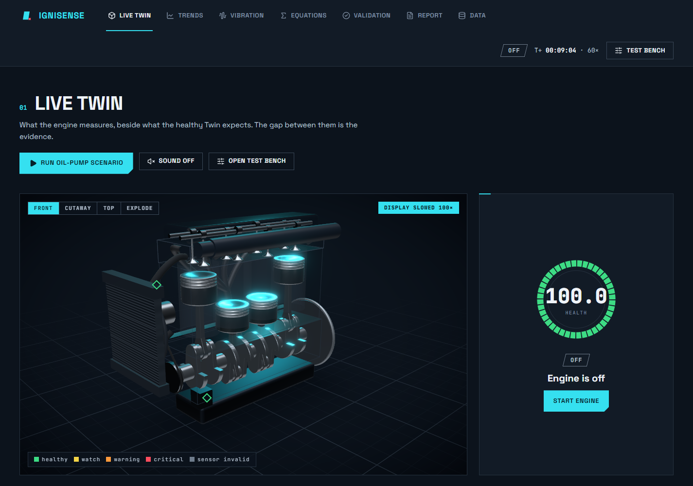
| Page | What it is for |
|---|---|
| Live Twin | The home view: 3D engine, health, gauges with Twin markers, the diagnosis card, alerts, cause-and-effect graph. |
| Trends | Measured vs Twin over time, fault and alert markers, and the two statistical detectors (D² and CUSUM). |
| Vibration | The vibration spectrum, the misfire polar plot that points at the failing cylinder, and crank-speed ripple. |
| Math | Every equation the app uses, with live numbers substituted. |
| Validation | Hand-calculated values beside the model's, computed live. All should be green. |
| Report | A one-page maintenance report you can print or save as PDF. |
| Data | Raw telemetry beside the Twin, plus recording, CSV replay and hardware connections. |
Each feature has the same layout: what it is, the steps to use it, what to look for, and (where useful) how it works underneath.
Open it with Test bench in the header or Open test bench on the Live Twin page. It slides in from the left. Buttons that do something (Inject fault, Repair, Start/Stop engine, Run/Stop scenario) close the drawer so you can watch the result. Settings (sliders, warp, fan) leave it open. Esc or Close ✕ also closes it.
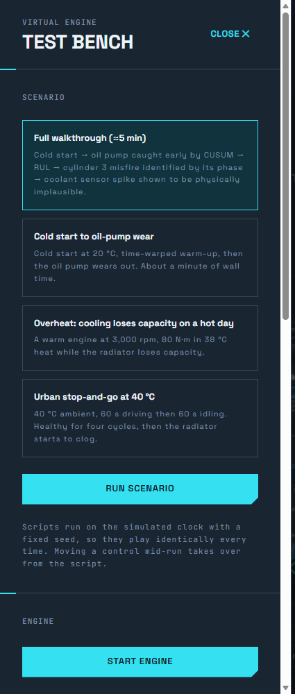
| Section / control | What it does |
|---|---|
Scenario list + Run scenario | Plays a scripted story on the simulated clock with a fixed seed, so it is identical every time. Four scenarios: Full walkthrough, Cold start to oil-pump wear, Overheat, Urban stop-and-go (see 4.3). |
Start engine / Stop engine | Cranks the engine (STARTING, then WARMUP, then RUNNING) or shuts it down. |
| Target RPM | 800 (idle) to 7,000. Redline is at 6,000. Default 3,000. |
| Load (N·m) | Brake torque applied to the engine, 0 to peak torque (190). Default 80. The app converts it to a load fraction L = torque ÷ the most the engine can make at that speed. |
| Ambient (°C) | Outside air temperature, −10 to 50. Default 30. |
| Radiator fan | AUTO (switches on above 98 °C with hysteresis), ON, or OFF. |
| Time-warp | 1×, 10× or 60×. Use 60× to skip warm-up, 10× to watch a fault develop, 1× to talk through something. |
| Start blind test | See 4.8. |
| Fault / Severity / Onset | See 4.2. |
Inject fault / Repair | Applies the chosen fault, or removes all faults. |
A fault is applied to the hidden Plant. Nothing on screen tells the monitor which one you chose: it has to find it in the sensors.
Start engine) and let it warm up. Set time-warp to 60× to speed this up. Wait until the badge says RUNNING · STEADY.GRADUAL ramps in over 120 simulated seconds, INSTANT is immediate, PROGRESSIVE keeps the fault growing (faster under load, heat and speed) so the remaining-life estimate has a trend to follow.Inject fault. The drawer closes. Watch the Live Twin page.Repair. Alerts clear after their hold time (about 20 simulated seconds per level).| Fault | What it does to the engine | What the monitor sees |
|---|---|---|
| Oil-pump wear | Pump health = 1 − 0.75 × severity. Oil pressure drops, even at idle. | Pressure far below the Twin's expectation; lubrication subsystem falls; CUSUM warns early. |
| Cooling degradation | Radiator loses capacity (health = 1 − 0.8 × severity). Coolant runs hot under load. | Coolant residual and its rate of change; thermal subsystem falls. |
| Cylinder misfire | Choose C1–C4. That cylinder's combustion health = 1 − severity (1 = dead cylinder). | Half-order line in the crank-speed spectrum; the polar plot names the cylinder. |
| Bearing wear | Lowers oil pressure and loosens the crank: more 1× vibration and knock. | Low pressure plus a 1× rise plus impacts is named "bearing wear" inside the lubrication diagnosis. |
| Alternator fault | Charging voltage sags. | Bus-voltage residual; electrical subsystem falls. |
| Sensor fault | Leaves the engine healthy and breaks one sensor: choose COOLANT, OIL T, PRESS or VOLT, and SPIKE, STUCK, DRIFT or DEAD. | The monitor proves the reading is impossible and reports a sensor fault, not an engine fault. |
| Scenario | What happens |
|---|---|
| Full walkthrough (≈ 5 min) | The whole demo on one button: cold start, oil pump caught early by CUSUM, remaining life, cylinder 3 misfire named by its phase, then a coolant sensor spike proven impossible. Each step waits for what the monitor concluded before moving on. |
| Cold start to oil-pump wear | Cold start at 20 °C, time-warped warm-up, then the oil pump wears out. About a minute of real time. |
| Overheat | A warm engine at 3,000 rpm and 80 N·m in 38 °C heat while the radiator loses capacity. |
| Hot city | Stop-and-go at 40 °C ambient: 60 s of driving, 60 s of idling, four cycles, then the radiator starts to clog. |
Run oil-pump scenario for the quickest story. Or open the Test bench, pick a scenario card, click Run scenario.Pause on the strip to talk over it, Resume to continue, Restart to replay, Stop to end.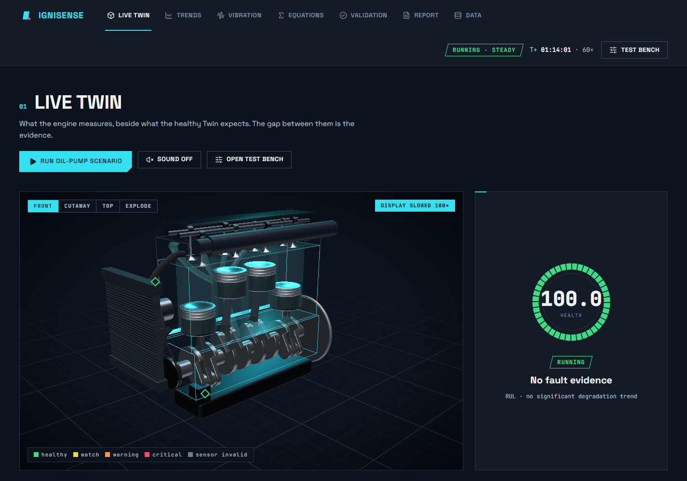
Steps:
FRONT, CUTAWAY, TOP or EXPLODE (top-left of the view) for a camera preset. Drag to orbit, scroll to zoom.View calculation opens the equation for it.The ring shows overall health from 0 to 100, coloured by the overall alert level (not by score bands). Under the number: the engine state or the alert class, and "limited by …" naming the subsystem that drives a WARNING or CRITICAL level (the overall number is a weighted average, so it can look mild beside one failing subsystem), the name of the diagnosed fault ("No fault evidence" when healthy), and a remaining-life line when a significant trend exists (otherwise it says what the statistics layer is doing, for example "learning the healthy baseline").
Below are six subsystems, each 0 to 100, with their weights: Lubrication 0.25, Thermal 0.25, Mechanical vibration 0.20, Combustion 0.15, Electrical 0.10, Sensor integrity 0.05. A dash means it is not monitored while the engine is off.
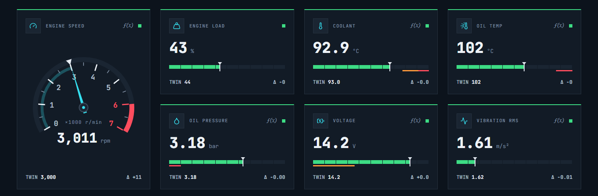
Steps: click any gauge's number, or its ƒ(x) mark, to open its calculation (4.7).
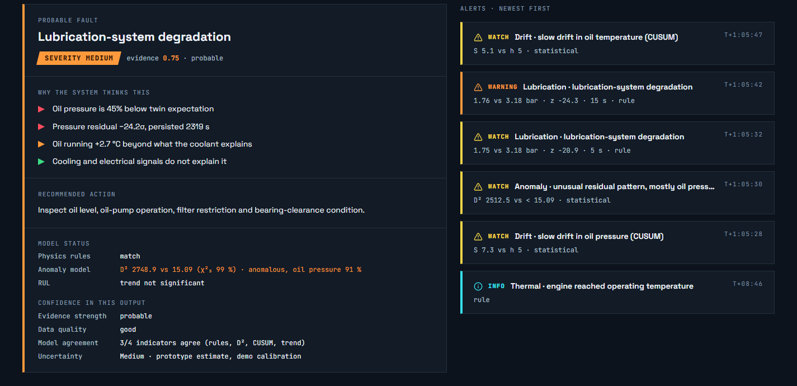
At the bottom of the page a graph links each fault the monitor can name to its physical effect and to the sensor that sees it. Nodes light up from the live symptom risks, so you can trace a reading back to its cause while the evidence builds.
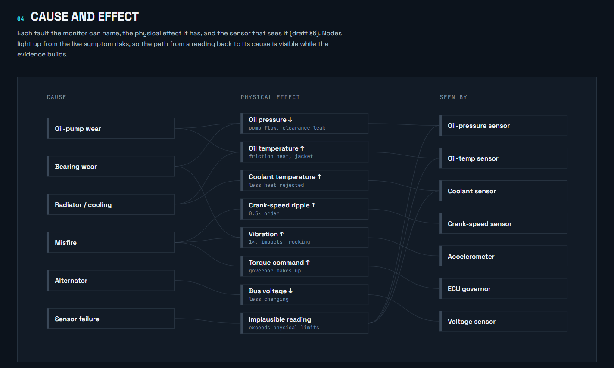
Charts of measured against expected over simulated time (they scroll as the clock runs).
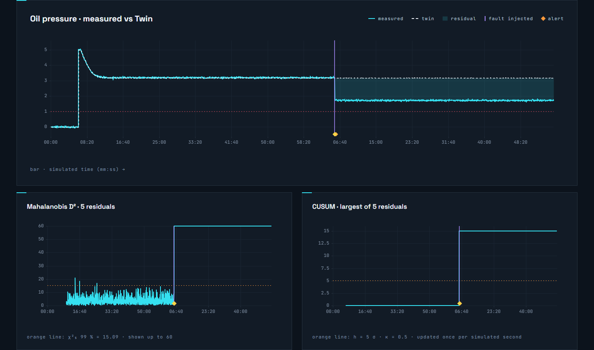
Steps: inject a fault (4.2) and open Trends. Watch CUSUM on oil pressure cross 5 before the rule-based alert appears: that is the early warning.
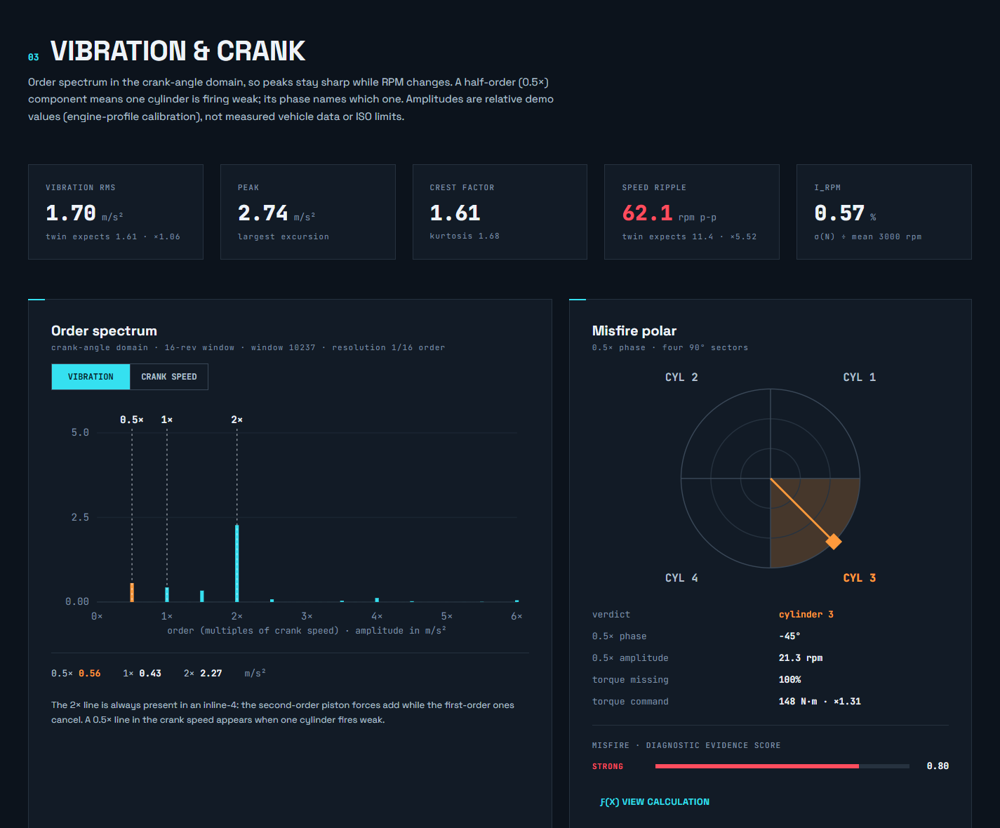
Steps:
Cylinder misfire, Cylinder: C3, click Inject fault.Sound on (Live Twin): one exhaust pulse in four goes missing, and the engine audibly stumbles.The app can show its own working. Every equation is registered with its symbols, units and a template, so the calculation view can substitute today's live numbers into it.
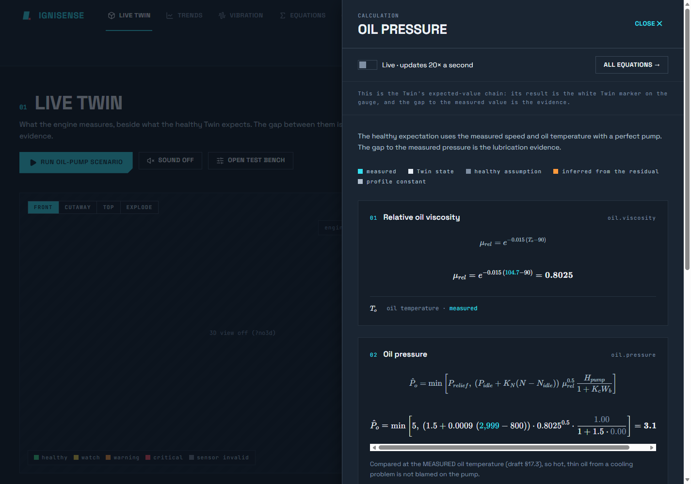
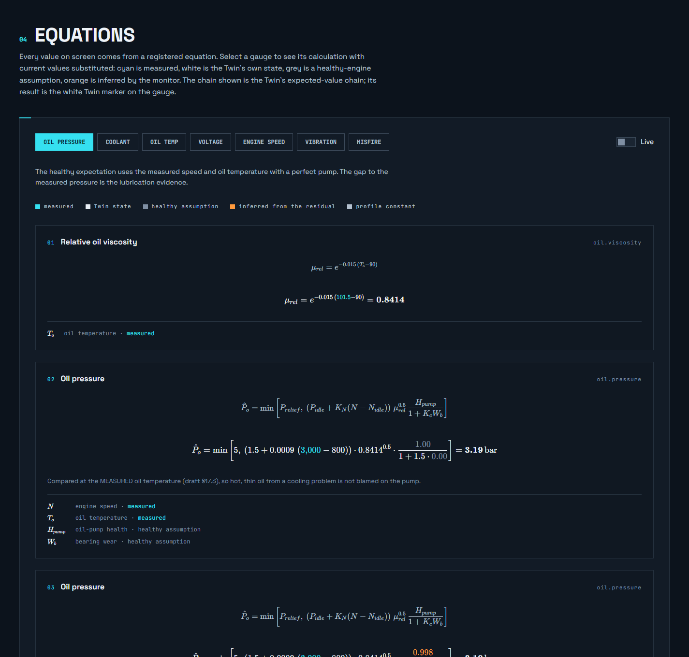
Proof that the monitor is not reading the injected fault. A hidden fault is chosen inside the simulation worker; the page only ever learns the card's position, never its content.
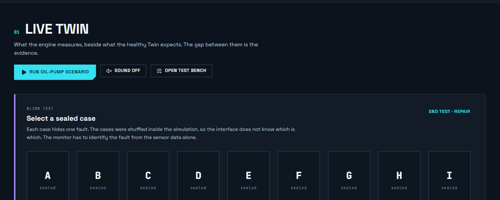
Start blind test. The drawer closes and the Live Twin page shows nine sealed cases.Reveal the card. The strip shows what was on the card and whether the monitor was ✓ CORRECT.New blind test for another round.The nine cards are: oil-pump wear, cooling degradation, a misfire in each of the four cylinders, worn crank bearings, an alternator losing output, and a stuck coolant sensor. Every card is named correctly in the tests.
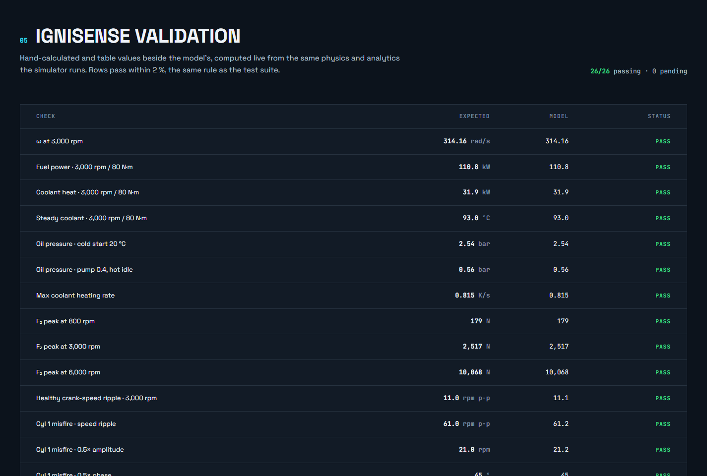
The Validation page computes the physics live in your browser and compares each result with a value worked out by hand. Examples: angular speed 314.16 rad/s, F₂ = 2,517 N at 3,000 rpm, cold-start oil pressure 2.54 bar, the 4/3 misfire torque ratio, the χ² limit 15.09, and the health example 69.4. All rows should read PASS. It is your answer to "how do you know the model is right?"
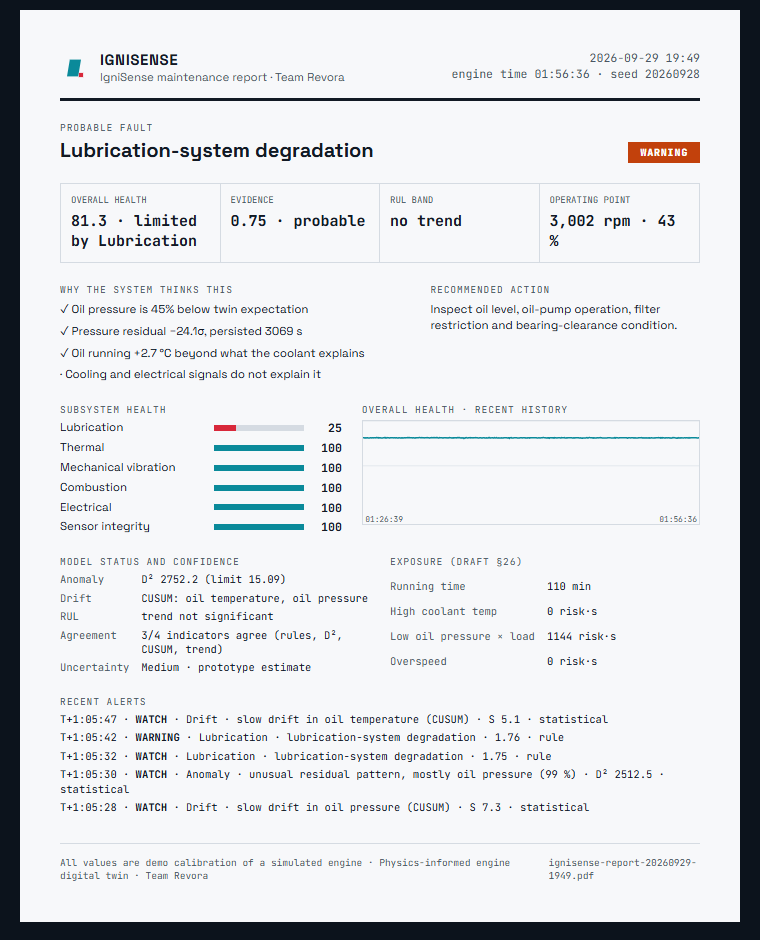
Refresh from engine to take a new snapshot (it does not update by itself).Print / save PDF. Choose "Save as PDF" as the printer. It prints on exactly one A4 page and the file is named ignisense-report-<time>.The sound is built from what the monitor measures, not from the hidden fault. Each cylinder fires an exhaust pressure pulse as loud as its measured power stroke, in the order 1-3-4-2, at the real engine speed (the 3D view is slowed, the sound is not). The pulses pass through a small model of an exhaust system (a pipe resonance, a muffler boost, and saturation that gets rougher under load).
Sound off (it becomes Sound on). The click is required by the browser.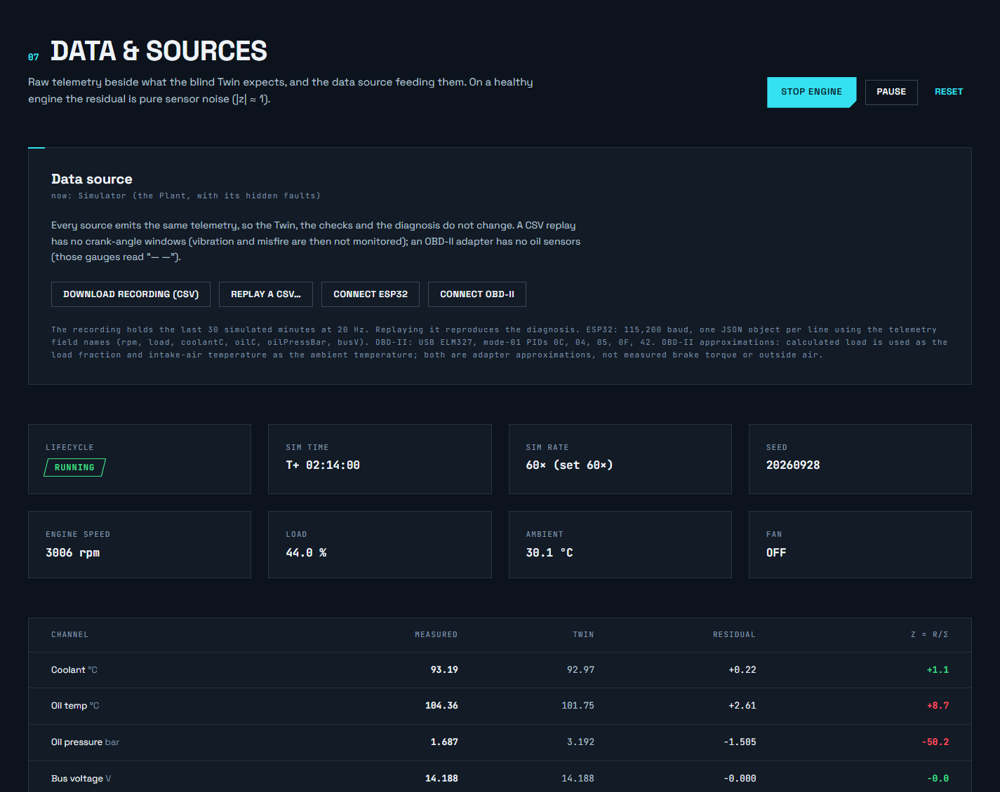
| Button | What it does |
|---|---|
Download recording | Saves the last 30 simulated minutes as a CSV file (the same telemetry the analytics see). |
Replay a CSV | Loads a recording. The header shows REPLAY. The same Twin and analytics process it, and replaying a recorded pump-fault run reproduces the diagnosis. It stops at the end of the file. |
Connect ESP32 | Web Serial over USB, JSON lines from a microcontroller with real sensors. Chrome or Edge only. |
Connect OBD-II | A USB ELM327 adapter on a real car: engine speed, load, coolant, intake temperature, module voltage. The oil channels are simply not fitted, and that raises no false alarm. |
Back to simulator | Returns to the built-in Plant. |
Pause / Reset | Pause freezes the simulated clock; Reset restarts the simulation from a cold engine with the same seed. |
Two clocks run inside a Web Worker: a slow physics loop for temperatures and pressure, and a fast crank-angle model for vibration and misfire.
| Parameter | Value |
|---|---|
| Bore × stroke | 86 × 86 mm, crank radius r = 43 mm |
| Con-rod length l; ratio λ = r/l | 145 mm; 0.297 |
| Displacement | 1,998 cc |
| Firing order; crank throws | 1-3-4-2; 0°, 180°, 180°, 0° |
| Idle / redline | 800 / 6,000 rpm |
| Peak torque curve | T_max(N) = 190 [1 − 0.53 ((N − 4000)/4000)²] N·m |
| Load | L = T_brake / T_max(N) |
Noise levels (one standard deviation): rpm 5, load 0.004, ambient 0.1 °C, coolant 0.2 °C, oil temperature 0.3 °C, oil pressure 0.03 bar, bus voltage 0.03 V.
Every random number comes from one seeded generator (src/lib/rng.ts). The scenarios run on the simulated clock. So the oil-pump and walkthrough scenarios play the same way on every computer.
From raw readings to a named fault, in eight small steps. Each is simple enough to explain on a whiteboard.
A misfire removes one power pulse every two revolutions. That repeats at half the crank frequency (order 0.5). The cylinders fire 180° of crank apart, which is 90° of phase at half order, so each cylinder has its own phase:
| Cylinder | Fires at | 0.5× phase |
|---|---|---|
| 1 | 0° | +45° |
| 3 | 180° | −45° |
| 4 | 360° | −135° |
| 2 | 540° | +135° |
The governor keeps the mean speed, so with one cylinder out the other three must do four cylinders' work: the torque command rises by exactly 4/3 (in the app, about 111 to 148 N·m).
The engine cannot do that, so the sensor failed. The other sensors and the Twin agree with each other, so the cooling system is not blamed.
Built around three moments people remember: a fault they choose themselves, named from the sensors alone; a misfire that names its cylinder; and a sensor fault the system refuses to believe.
start-ignisense.bat (or npm run demo). Check the fps number in the 3D view: about 60 is right, under about 20 means reload with ?no3d. Volume up (sound starts only after you click Sound on). Two ways to run it: Safe is Test bench → Scenario → Full walkthrough → Run scenario, which drives every step for you (use Pause to talk). Live is doing the clicks yourself, best when a visitor picks the fault.| Time | Moment | Do this / point at this |
|---|---|---|
| 0:00–0:40 | The problem | say Fixed-interval maintenance wastes parts or misses failures. IgniSense has two engines: the "real" one with hidden faults, and a healthy twin that only sees sensor readings. The gap between them is the evidence. |
| 0:40–1:20 | Cold start | Start at 20 °C, idle. Oil pressure reads about 2.5 bar (cold oil is thick). The white Twin marker sits on each needle. Pistons are slowed 100×. At 60× the half-hour warm-up passes in about half a minute. Click the oil-pressure value: the drawer shows the equation and ✓ EQUAL. |
| 1:20–2:20 | Blind fault | Test bench, Start blind test. A visitor selects a case. Point at Trends → CUSUM crossing 5 before any rule trips (the early warning), then the WATCH and WARNING alerts and the diagnosis card. Press Reveal the card: ✓ CORRECT. |
| 2:20–3:20 | Misfire | Inject Cylinder misfire on C3. Turn Sound on: the engine stumbles. On Vibration a 0.5× line appears and the polar dot lands in the C3 sector (−45°). The torque command rises by 4/3. The card names "Cylinder 3 misfire". |
| 3:20–3:50 | Sensor fault | Repair, then Sensor fault: COOLANT, SPIKE. The card says "Coolant sensor fault": the reading jumped 25 °C in 0.1 s (about 250 K/s) but the energy balance allows 0.81 K/s. The cooling system is not blamed. |
| 3:50–4:30 | Prognosis and report | Oil-pump wear with onset PROGRESSIVE at 10× for a minute: the health panel shows a remaining-life band. Raise the Load slider: wear speeds up and the RUL shrinks. Report → Print / save PDF. |
| 4:30–5:00 | Hardware path | say Every source emits the same telemetry object. An ESP32 with cheap sensors (DS18B20, MAX31855, a pressure transducer, an ADXL345) or a USB OBD-II adapter only needs one adapter file; the analytics do not change. Next step: a heat-balance run on a real engine rig. |
| Question | Answer |
|---|---|
| Isn't it just reading the fault you injected? | No. The analytics only receive telemetry; the fault lives in a module they cannot import (a lint rule enforces it). The blind test proves it. |
| How accurate is the model? | A reduced-order model with demo calibration, checked against hand calculations on the Validation page. Absolute accuracy needs calibration on a real engine. |
| Why not deep learning? | There is no real failure data. A network trained on our simulator would just learn our own equations back. Our statistics have a known false-alarm rate; machine learning becomes useful once real data is logged. |
| What is the false-alarm rate? | D² uses the χ² 99 % limit, so about 1 healthy sample in 100 crosses it. An alarm needs 3 s of persistence. In our tests a healthy engine never raised a held alarm. |
| Why does an inline-4 shake at twice crank speed? | The first-order piston forces cancel between the pairs of cylinders; the second-order forces add. That is 2,517 N peak at 3,000 rpm. |
| How do you know which cylinder misfired? | From the phase of the half-order crank-speed component: +45°, +135°, −45°, −135° for cylinders 1, 2, 3, 4. |
| Why exactly 4/3? | The governor holds the speed, so mean torque must still match the load. With one cylinder out, three pulses carry four pulses' worth. |
| Sensor spike or real overheating? | Physics: the engine cannot heat faster than about 0.8 K/s, and a real rise would also warm the oil through the water jacket. |
| Is the RUL real? | It is a trend estimate: a straight-line fit with a ±2 standard-error band, shown only when the slope is significant, and conditional on the current load. |
| Symptom | Recovery |
|---|---|
| The 3D view stutters | Keep going: the numbers are unaffected. Or reload with ?no3d. |
| A step is taking too long | Test bench → Time-warp 60×, or press Restart on the scenario strip. |
| A wrong fault is still active | Test bench → Repair. Alerts clear after their hold time. |
| Lost track of the state | Reload the page. It restarts from a cold engine with the same seed. |
Do the first block tonight. Do the second block on the day. Nothing here needs the internet except the first install.
node --version shows 20.19 or higher.start-ignisense.bat once with internet, keep the window open until the browser opens.?no3d. gatePrint / save PDF, keep the PDF on the desktop.F11) and zoom so the gauges are readable from a distance.docs/whiteboard.md open for the derivations: ω = 314 rad/s, 4/3, 0.8 K/s, F₂ = 2,517 N.Repair then reload if anything looks odd.IgniSense was built one phase at a time. Each phase ends with tests that must pass, so this is also the order to rebuild it in.
| Phase | What was built | Where, and how it was checked |
|---|---|---|
| 0 | Scaffold and guard rails | Vite, React, TypeScript strict, Tailwind, Vitest, ESLint. The rule that stops the analytics importing the plant. Seeded RNG. |
| 1 | Slow physics | src/physics/: pure functions for friction, energy, cooling, oil, electrical. Golden numbers reproduce within 2 %. |
| 2 | Plant, sensors, Twin, worker | plant/, twin/, sources/simSource.ts, worker/. Healthy residuals are pure noise; same seed, same telemetry. |
| 3 | Faults, residuals, diagnosis, health, alerts | analytics/. Each fault gives the right top diagnosis; healthy 20 min gives no alarm. |
| 4 | Live dashboard | ui/pages/LiveTwin, Trends, zustand store, uPlot charts. |
| 5 | 3D engine | three/: procedural I4 driven by the slider-crank equation. |
| 6 | Oil-pump scenario | worker/scenarios.ts; three runs identical. |
| 7 | Crank angle, vibration, misfire | physics/crankTorque, vibration; analytics/fft, spectral. Every misfire golden row reproduces. |
| 8 | Calculation view, blind test | physics/registry.ts, ui/math/, worker/blind.ts. Substituted numbers equal the gauges. |
| 9 | Advanced analytics | Sensor sanity, D², CUSUM, RUL, extra faults, stress-dependent wear. |
| 10 | Validation, report, sound, hot city | ui/pages/Validation, Report; ui/audio/. |
| 11 | Demo hardening | Full walkthrough, start scripts, offline check, docs/demo-script.md. |
| 12 | Open-questions review | docs/open-questions-review.md: decisions that need the physics owner. |
| 13 | Real data sources | sources/csv, replaySource, serialSource; ESP32, OBD-II, phone accelerometer. |
| Folder | Holds |
|---|---|
| src/physics/ | Pure equations, each registered with LaTeX, inputs and a compute function (that is what the calculation view reads). No state. |
| src/engine/profile.ts | Every engine parameter with units in the name (bore_m, uaFan_WperK). Change a value here, then run npm test. |
| src/plant/ | The "real" engine state, hidden faults, sensor model, crank and accelerometer signals. |
| src/twin/ | The healthy reference. Driven only by measured speed, load, ambient. |
| src/analytics/ | Residuals, sanity checks, statistics (D², CUSUM), FFT, diagnosis, health, alerts, remaining life. May not import plant or sources. |
| src/sources/ | Anything that produces telemetry: simulator, CSV replay, ESP32 / OBD-II. |
| src/worker/ | The simulation loop (simLoop.ts), scenarios, blind deck, the worker wrapper, and the message types. |
| src/three/ | The 3D scene. |
| src/ui/ | Pages, design-system components, math drawer, audio, the test bench. |
| docs/ | The research review and build plan (source of truth), calibration log, open questions, demo script, whiteboard derivations. |
| I want to… | Change |
|---|---|
| Change an engine parameter (mass, efficiency, radiator size…) | src/engine/profile.ts, then log it in docs/calibration.md |
| Change alert thresholds, weights, misfire ramps | src/analytics/config.ts |
| Change how the engine sounds (level, brightness, growl) | tone() in src/ui/audio/engineSound.ts |
| Change the team or product name | src/brand.ts (used everywhere) |
| Add a scenario | src/worker/scenarios.ts |
| Add a new data source (a real sensor board) | One new file in src/sources/ that outputs the same Telemetry object. The analytics do not change. |
null, never 0 or NaN. Every new physics function gets a test against a hand-calculated value.The values the tests check and the demo quotes. All are demo calibration.
| Angular speed ω | 314.16 rad/s |
| Crank frequency | 50 Hz |
| Firing frequency | 100 Hz |
| Brake power at 80 N·m | 25.1 kW |
| BMEP at 80 N·m | 5.03 bar |
| Cold idle, 20 °C | 2.54 |
| Hot idle, 100 °C | 1.39 |
| Hot, 3,000 rpm | 3.23 |
| Pump 0.4, hot idle | 0.56 |
| Bearing wear 0.6, 3,000 | 1.70 |
| 800 rpm (26.7 Hz) | 179 |
| 3,000 rpm (100 Hz) | 2,517 |
| 6,000 rpm (200 Hz) | 10,068 |
| Healthy ripple | 11 rpm p-p |
| One cylinder out | 61 rpm p-p |
| 0.5× amplitude | 21.0 rpm |
| Torque command | 110 → 146 N·m (×4/3) |
| Phases C1, C2, C3, C4 | +45, +135, −45, −135° |
| χ²(5), 99 % | 15.09 |
| CUSUM κ, h | 0.5, 5 |
| Max coolant heating | ≈ 0.8 K/s |
| Health example (draft §22.1) | 69.4 |
| Point | Brake kW | Fuel kW | Coolant kW | Fuel L/h | Steady coolant |
|---|---|---|---|---|---|
| Idle 800 rpm | 0 | 7.5 | 2.6 | 0.85 | 82 °C (warm-up) |
| 3,000 rpm, 80 N·m | 25.1 | 110.8 | 31.9 | 12.5 | 93 °C |
| 4,000 rpm, 190 N·m | 79.6 | 252.3 | 55.5 | 28.6 | 98 °C (fan cycling) |
| 6,000 rpm, full load | 103.6 | 370.4 | 81.5 | 41.9 | 98 °C (fan cycling) |
Faults: cooling health 0.5 at full load reaches 132 °C; cooling health 0.25 at 3,000 rpm / 80 N·m reaches 110 °C.
Saying these yourself is a strength. It shows you know what the model is and is not.
| Term | Meaning |
|---|---|
| Digital twin | A live model of a physical thing, run alongside it and compared with it. |
| Plant | In IgniSense, the simulated "real" engine, the only place hidden faults exist. |
| Twin | The healthy reference model. It predicts what each sensor should read. |
| Telemetry | The one common data format every source produces (rpm, load, temperatures, pressure, voltage, and so on). |
| Residual (r, z) | Measured minus expected; z is that gap in units of the sensor's noise. |
| Twin marker | The white tick or pointer showing the Twin's expected value on a gauge. |
| Health factor | A 0-to-1 multiplier on part of the physics. 1 = healthy. |
| Severity | How bad an injected fault is, 0 to 1. |
| Evidence score | The weighted 0-to-1 support for a fault. Not a probability. |
| CUSUM | Cumulative sum of small residuals; catches a slow persistent drift early. |
| D² (Mahalanobis) | A single number for how unusual the whole set of residuals is compared with healthy running. |
| χ² limit | The threshold D² exceeds only about 1 time in 100 for a healthy engine (15.09 for 5 signals). |
| RUL | Remaining useful life: how long until health reaches the failure level, at the current trend and load. |
| Hysteresis | Requiring a condition to persist (or clear) for some time, so alerts do not flicker. |
| Order (0.5×, 1×, 2×) | A multiple of crank speed. Order tracking keeps a fault at the same order at any rpm. |
| F₂ | The second-order reciprocating force that makes an inline-4 shake at twice crank speed. |
| Misfire | A cylinder that fails to fire, removing one power pulse every two revolutions. |
| Time-warp | Running the simulated clock faster than real time (1×, 10×, 60×). |
| Demo calibration | A parameter chosen to give sensible behaviour, not measured on a real engine. |
IgniSense — Smart Engine Health Diagnostic · Team Revora · Physics-informed engine digital twin. For deeper detail see docs/research-review-and-build-plan.md, docs/calibration.md, docs/demo-script.md and docs/whiteboard.md.